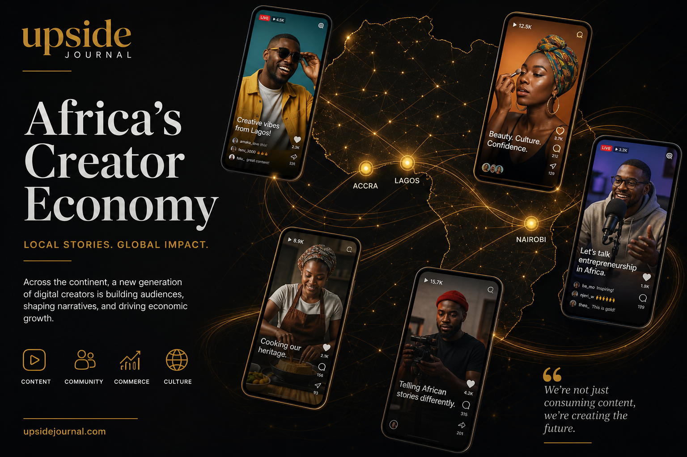

When Woof Studios Africa made history at Cannes Lions 2025 as the first African-led company to host a panel at the LIONS Creators Forum, it was a statement. When founder Adetutu Laditan announced she was returning in 2026 with an all-female delegation — it became a movement.
This June, Woof Studios is heading back to the Palais des Festivals in Cannes for a second consecutive year, this time leading a formidable cohort of West African digital powerhouses onto the acclaimed Creators Stage. The panel, titled "How Africa's Creators Are Building Culture as Infrastructure," is scheduled for Tuesday, 23 June — and it's positioned to shift the global conversation from localised virality to institutional economic power.
From Google to the Creator Economy's Front Lines
Adetutu Laditan's trajectory is the kind of story that makes you rethink what a founder's journey looks like.
Before launching Woof Studios, she spent over a decade at Google, where she served as Senior Marketing Manager for YouTube across sub-Saharan Africa. Her role wasn't just marketing — it was ecosystem building. She led creator growth strategies across Nigeria, Ghana, South Africa, and Kenya, helping some of the continent's biggest digital voices find audiences and revenue streams on the platform.
But Laditan saw a gap. African creators were building massive audiences, yet the infrastructure to monetise, scale, and protect their work remained underdeveloped. The traditional talent management model — built for Hollywood and Western media markets — didn't fit the realities of Lagos, Accra, or Nairobi.
So she built something that did.
What Woof Studios Actually Does
Woof Studios Africa operates as a next-generation creator services company — part multichannel network, part cultural engine. The company connects African storytellers to global brand partnerships, content deals, and monetisation opportunities while maintaining a deliberate focus on amplifying African narratives on their own terms.
The model goes beyond typical influencer management. Woof Studios provides end-to-end creator services: audience strategy, brand partnership negotiation, content production support, and — critically — cross-border deal structuring that helps African creators access international markets without losing ownership of their work.
It's a model built for how the creator economy actually works in Africa: mobile-first, community-driven, and deeply connected to culture.
The 2026 Cannes Delegation

This year's Cannes Lions delegation is a masterclass in strategic representation. Laditan is bringing three of West Africa's most influential digital voices:
• Tomike Adeoye — Nigerian actress, presenter, and content creator with a massive cross-platform following
• Jennifer Awirigwe (Financial Jennifer) — Founder of FinTribe, a creator-led fintech platform that has built a $5 million savings ecosystem for women
• Bernice Boakye Ansah (Berneese) — Ghanaian digital creator and cultural commentator bridging West African storytelling with global audiences
The panel's thesis is bold but defensible: African creators aren't waiting to be discovered by global brands. They're building the economic infrastructure — the communities, the payment systems, the distribution networks — that those brands will spend the next decade trying to understand.
Why This Matters for Nigerian Tech
The creator economy in Africa is projected to be worth over $20 billion by 2030, driven by the continent's young, digitally native population and rapidly expanding internet penetration. Nigeria alone has over 100 million internet users, and platforms like YouTube, TikTok, and Instagram are seeing explosive growth in African content consumption.
But the value chain remains broken. Most African creators still lack access to the monetisation tools, legal frameworks, and brand deal infrastructure that their Western counterparts take for granted. Companies like Woof Studios are attempting to close that gap — not by copying Western models, but by building African-first solutions.
Laditan's return to Cannes Lions — this time with an all-female delegation and a bigger stage — signals that the conversation is shifting. African creators are no longer the "emerging market" sidebar at global conferences. They're the main act.
What to Watch
Woof Studios' panel, "How Africa's Creators Are Building Culture as Infrastructure," takes place on the Cannes Creators Stage on Tuesday, 23 June 2026. It's one of the most anticipated sessions at this year's LIONS Creators programme, now in its third year and co-presented with Adobe.
For founders, brand marketers, and investors attending Cannes Lions 2026: this is the session that will redefine how you think about Africa's creative economy. Don't miss it.
FAQ
What is Woof Studios Africa?
Woof Studios Africa is a next-generation creator services company founded by Adetutu Laditan. It operates as a multichannel network and cultural engine, connecting African creators to global brand partnerships and monetisation opportunities.
Who is Adetutu Laditan?
Adetutu Laditan is the Founder and Creative Director of Woof Studios Africa. She previously served as Senior Marketing Manager for YouTube in sub-Saharan Africa at Google, where she led creator ecosystem growth across key markets.
When is Woof Studios presenting at Cannes Lions 2026?
Woof Studios is leading a panel titled "How Africa's Creators Are Building Culture as Infrastructure" on the Cannes Creators Stage on Tuesday, 23 June 2026.
What is the creator economy in Africa worth?
The African creator economy is projected to exceed $20 billion by 2030, driven by the continent's young population and expanding internet access.
This article is part of Upside Journal's "Nigerian Tech at Cannes Lions 2026" series, profiling the founders and companies representing Nigeria on the global stage. Read more at theupsidejournal.com.